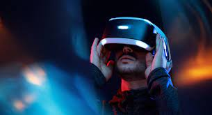
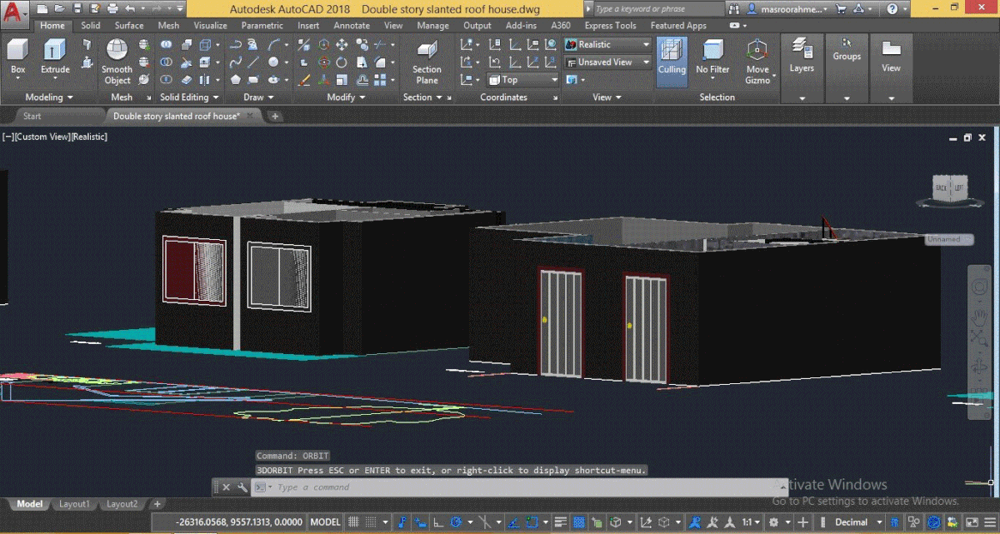
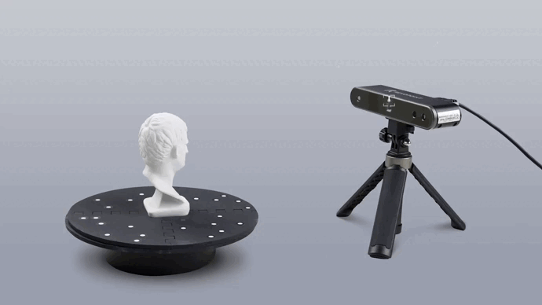

Introduction à la Réalité Virtuelle et à la Modélisation 3D
La réalité virtuelle (RV) et la modélisation 3D sont des technologies innovantes qui nous permettent de créer des mondes virtuels en trois dimensions grâce à des ordinateurs puissants. Elles ont révolutionné notre approche de l'exploration du passé, que ce soit en revivant des événements historiques majeurs ou en redécouvrant des trésors culturels. Dans ce voyage, nous allons explorer comment ces technologies élargissent nos horizons en matière de compréhension historique.
Reconstituer des Événements Historiques
La reconstitution d'événements historiques à l'aide de la réalité virtuelle offre une approche immersive qui redonne vie au passé. Cette technologie permet de recréer des moments significatifs de l'histoire, tels que des batailles majeures, des cérémonies importantes, ou des moments emblématiques.
Les avantages de la reconstitution d'événements historiques en RV sont multiples :
Expérience immersive : Les participants ont l'opportunité de s'immerger dans l'Histoire et de revivre ces moments historiques, grâce à des environnements virtuels réalistes.
Éducation et sensibilisation : Les reconstitutions historiques offrent une nouvelle approche pédagogique pour l'apprentissage de l'histoire. Les étudiants ou les personnes assoifées de connaissances peuvent ainsi mieux comprendre et mémoriser les événements du passé.
Recherche historique : La technologie de réalité virtuelle permet aux chercheurs de revisiter l'histoire en reconstituant des scènes historiques en 3D, offrant ainsi une expérience immersive. Cela les aide à tester des hypothèses, résoudre des énigmes historiques et obtenir de nouvelles perspectives sur le passé.
Ci-dessous, nous pouvons avoir un aperçu de ce à quoi ressemblait la Guerre de Sécession en 1861.
Ainsi, la reconstitution d'événements historiques en RV offre une expérience immersive qui enrichit notre compréhension du passé, ouvrant de nouvelles perspectives pour l'éducation et la recherche.
Back to TopReconstruction des Sites du Patrimoine Culturel
La reconstruction des sites du patrimoine culturel à l'aide de la réalité virtuelle et de la modélisation 3D est une avancée majeure dans la préservation et la mise en valeur de notre héritage culturel. Cette technologie nous permet de découvrir, restaurer et explorer des sites et des monuments, des trésors culturels qui ont façonné notre histoire.
Voici comment la technologie est utilisée pour préserver et explorer notre patrimoine culturel :
Reconstitution de Sites Archéologiques : Des sites archéologiques du monde entier, tels que les cités antiques, les amphithéâtres romains et les palais royaux, sont minutieusement reconstitués en 3D. Les visiteurs peuvent ainsi se promener dans ces lieux anciens et en apprendre davantage sur leur histoire.
Restauration de Monuments Historiques : Les monuments historiques endommagés par le temps ou la guerre sont restaurés numériquement. Cela permet de contempler ces monuments à leur apogée, tout en aidant à la préservation réelle de ces sites.
Visites Virtuelles de Musées et de Sites Culturels : Les visiteurs peuvent explorer des collections d'art, des expositions spéciales et des sites culturels sans avoir à quitter le confort de leur domicile.
L'Égypte ancienne remodelée pour voir à quoi cela ressemblait:
L'application de ces technologies à la reconstruction du patrimoine culturel révolutionne la préservation de notre histoire, ouvrant la voie à une perspective inédite sur notre héritage.
Back to TopTechnologies et Outils Utilisés
La reconstitution d'événements historiques ou des sites du patrimoine culturel sont possibles grâce à l'utilisation de diverses technologies et outils de pointe. Ces derniers permettent de concevoir des expériences immersives et éducatives qui rendent le passé plus accessible au public contemporain..
Voici quelques-unes des technologies et des outils couramment utilisés dans ce domaine :
Réalité Virtuelle (RV) : La réalité virtuelle est le pilier central de ces reconstitutions. Elle permet aux participants de s'immerger complètement dans des environnements virtuels, qu'il s'agisse de champs de bataille, d'anciennes civilisations ou de musées historiques.
Modélisation 3D : La modélisation 3D est utilisée pour recréer des objets, des bâtiments et des sites historiques. Les détails sont modélisés avec précision pour garantir l'authenticité visuelle.

Logiciels de Conception Assistée par Ordinateur (CAO) : Les logiciels de CAO sont utilisés pour créer des modèles 3D précis. Ils sont essentiels pour la modélisation architecturale et la reconstruction de bâtiments historiques. Des exemples de logiciels de CAO qui sont couramment utlisés sont: AutoCAD et SolidWorks. Ci-dessous un exemple de l'interface de AutoCAD.
Casques de Réalité Virtuelle : Les casques de réalité virtuelle, tels que l'Oculus Rift et le HTC Vive, permettent aux utilisateurs de s'immerger complètement dans des environnements historiques.
⚠ Attention à ne pas trop s'immerger non plus :P

Scanners 3D : Les scanners 3D sont utilisés pour capturer des données sur des objets ou des sites historiques existants, ce qui facilite leur reproduction en 3D.
Vidéo 360 degrés : Les vidéos à 360 degrés offrent une expérience immersive en permettant aux utilisateurs de regarder autour d'eux dans des environnements reconstitués.
Ces technologies et outils convergent pour créer des expériences captivantes qui permettent aux gens de voyager dans le temps et de découvrir le passé d'une manière totalement nouvelle.
Back to TopEntretien et Témoignage
Fabien Barati est un pionnier dans le monde de la réalité virtuelle et de la réalité augmentée.
Il est le co-fondateur et PDG de Emissive, une compagnie qui crée des expériences immersives pour des institutions and marques culturelles depuis 2005.
Emissive
Emissive collabore, entre autres, avec le Musée du Louvre, le Musée Philippe Patek, l'Institut du Monde Arabe afin d'offrir des expériences uniques à leur public en altérant la manière dont les gens interagissent avec la culture, l'histoire, l'art et d'autres domaines.
Ainsi, Emissive joue un rôle clé dans la préservation du patrimoine culturel, l'éducation et la sensibilisation du public en transformant des environnements physiques en espaces interactifs et immersifs. Ces expériences permettent aux visiteurs de mieux comprendre et d'apprécier le contenu culturel, historique et artistique d'une manière engageante et mémorable.
Back to TopCe site nous a permis de découvrir l'impact significatif de la réalité virtuelle et de la modélisation 3D sur notre compréhension du passé. Grâce à ces technologies, nous avons exploré l'histoire et le patrimoine culturel de manière unique. En partageant cette précieuse connaissance, nous contribuons à préserver notre héritage pour les générations futures.